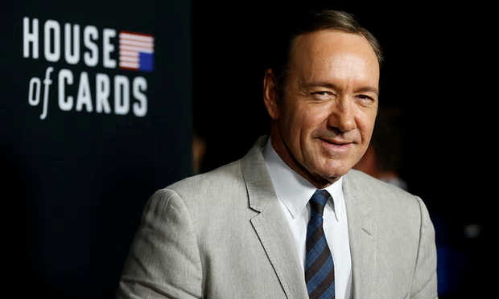
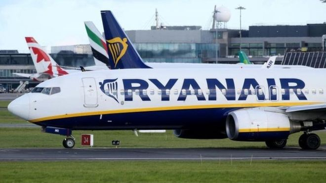

 Netflix cancels House of cards amid Kevin Spacey allegations Netflix has pulled the plug on House of Cards, a day after its lead actor Kevin Spacey was accused of sexually harassing a teenage boy.
Bank of England believes Brexit could cost 75,000 finance jobs. The Bank of England believes that up to 75,000 jobs could be lost within the financial services industry because of Brexit, the BBC reported on Tuesday.
 Ryanair buoyant despite cancellations. Ryanair has said it still expects to make record annual profits this year, despite disruptions to its schedules that led it to cancel 20,000 flights.